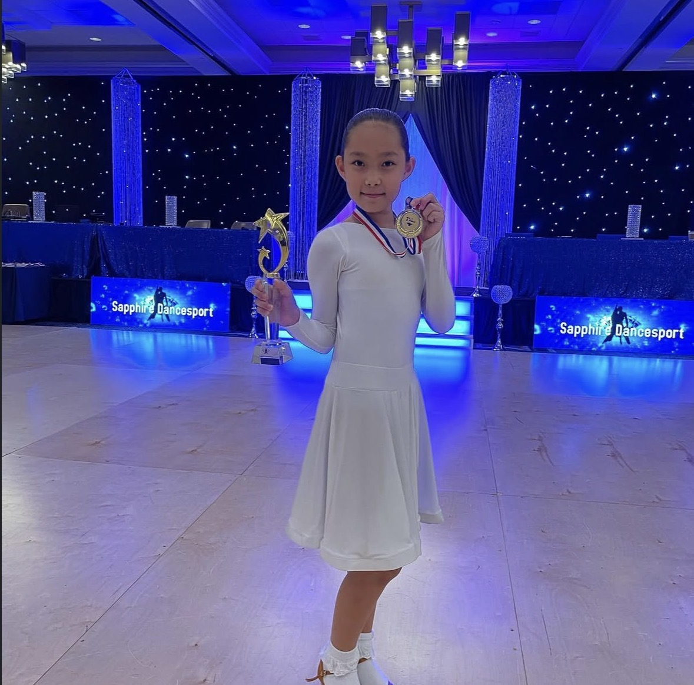
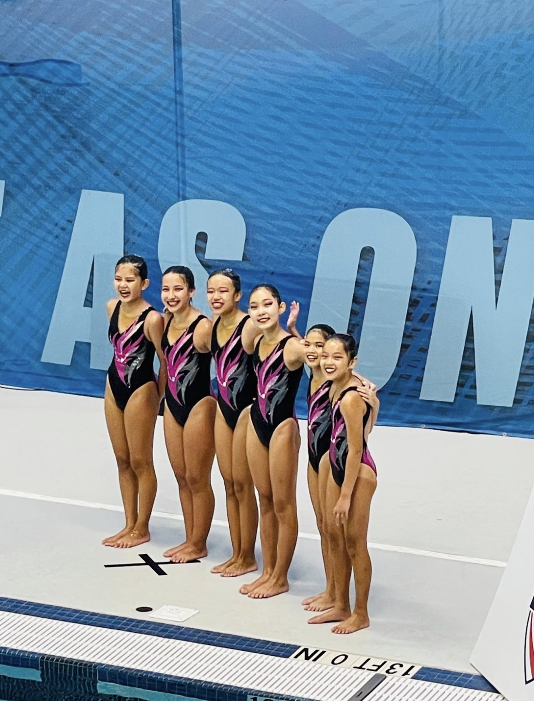
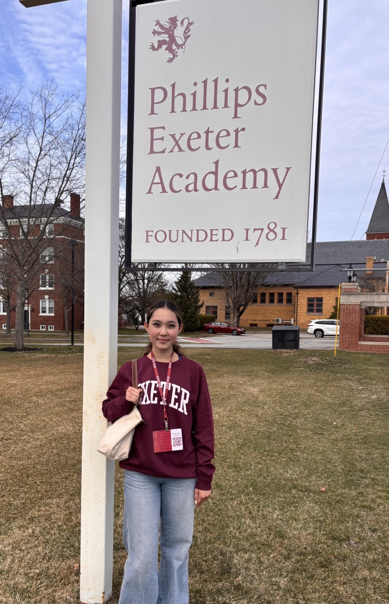

Ballroom Dance State Champion
I earned the state champion title in ballroom dance after months of consistent training and hard work.

I earned the state champion title in ballroom dance after months of consistent training and hard work.


I was one of six people selected to attend Junior Olympics in Hampton, Virginia with my team after we qualified. We attended and performed our routine in front of a national audience to finish off the season.
I was accepted into Phillips Exeter Academy, one of the most prestigious independent schools in the nation. I did so by focusing on both academics, athletics, and community involvement.
